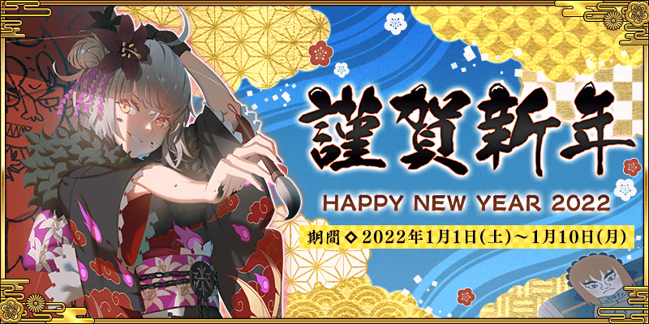
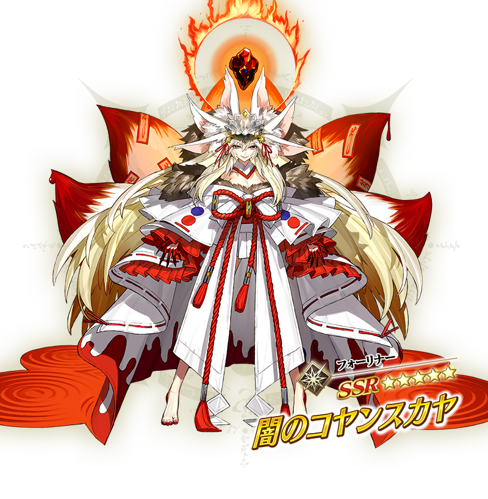
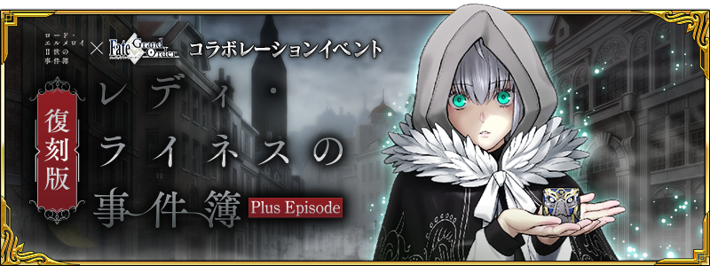
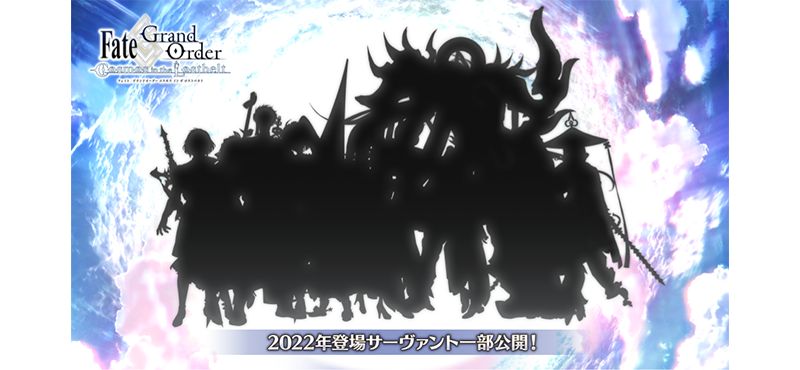
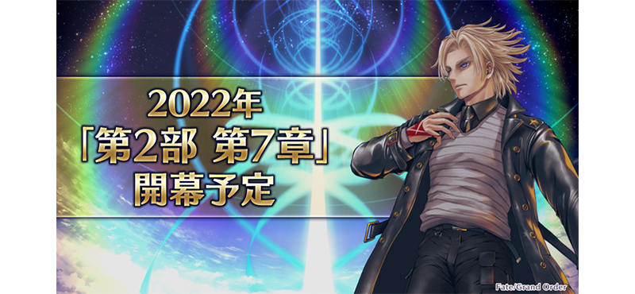

感謝您使用「Fate/Grand Order」。
在2021年12月31日(五)放送的「Fate Project 除夕TV特別2021」發表了有關智慧型手機FateRPG「Fate/Grand Order」為主的FGO PROJECT新情報。
以下介紹一部份新情報。
◆「2022年新年宣傳活動」舉辦！◆

發表了自2021年12月31日(五) 23:00舉辦「2022年新年宣傳活動」。
期間限定從者「★5(SSR)闇之高揚斯卡婭」新登場！
另外，舉辦能用有償聖晶石15個召喚的期間限定「福袋召喚2022(寶具類型別)」！
◆「New Year 2022Pick Up召喚」舉辦！◆

期間限定從者「★5(SSR)闇之高揚斯卡婭」新登場！
「★5(SSR)闇之高揚斯卡婭」與3種期間限定概念禮裝Pick Up。
並且本次6位期間限定★5(SSR)從者與期間限定概念禮裝Pick Up的6種召喚以每日交替舉辦。
※「★5(SSR)闇之高揚斯卡婭」的Pick Up召喚及每日交替舉辦的Pick Up召喚，為各自分開的的召喚。
◆「福袋召喚2022(寶具類型別)」舉辦！◆

發表了自2021年12月31日(五) 23:00舉辦「福袋召喚2022(寶具類型別)」。

今年的福袋是用寶具類型區分的福袋！
只能從14種福袋召喚之中召喚1個。
※用有償聖晶石15個才能召喚。無法用無償聖晶石召喚。
另外，無論選擇哪個福袋召喚進行召喚時，可特別獲得聖杯1個。
◆在期間限定Pick Up召喚實裝「確定召喚」！◆
自舉辦中的期間限定「New Year 2022Pick Up召喚」，追加在規定次數(330次)以內必定召喚1位Pick Up對象★5(SSR)從者的「確定召喚」功能！
※召喚次數的計算，用有償聖晶石(包含1天1次限定的「1次召喚」)、無償聖晶石、呼符都是召喚對象。 ※召喚次數是每個期間限定Pick Up召喚分別計算。還有，以每日交替Pick Up召喚的內容切換的情況，會分別計算各自的召喚次數。 ※特定召喚中召喚到1位Pick Up對象★5(SSR)從者的情況，從那之後，該召喚中不適用本功能。 ※在過去進行的召喚結果，每個靈基召喚可在該靈基召喚畫面確認最多500件的召喚履歴。
◆在每日關卡「修練場」追加難易度「極級」！◆
在入手從者技能強化素材手的每日關卡「修練場」，追加做為上位關卡的難易度「極級」！
變得能入手主線關卡1.5部為止追加的素材。
另外，「修練場」的難易度「初級」「中級」的關卡中，調整讓靈基再臨素材「銀像」「金棋」更容易獲得。
◆艾梅洛Ⅱ世閣下事件簿×Fate/Grand Order聯動活動復刻版「復刻版:淑女・萊涅絲事件簿 -Plus Episode-」舉辦！◆

發表了艾梅洛Ⅱ世閣下事件簿×Fate/Grand Order聯動活動復刻版「復刻版:淑女・萊涅絲事件簿 -Plus Episode-」自2022年1月中旬(預定)舉辦。
關於詳情，預定日後公開。
◆公開一部份2022年登場從者的剪影！◆
公開了預定在2022年登場預定的一部份從者剪影。

◆第2部 第7章「Lostbelt No.7」預定2022年開幕！◆
發表了第2部 第7章「Lostbelt No.7」預定在2022年開幕。

今後也請多多指教「Fate/Grand Order」。